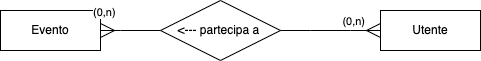
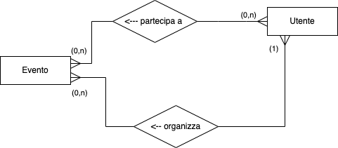
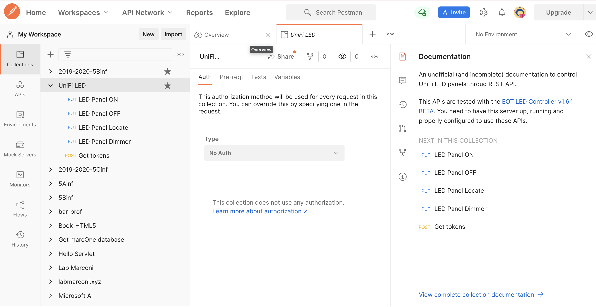
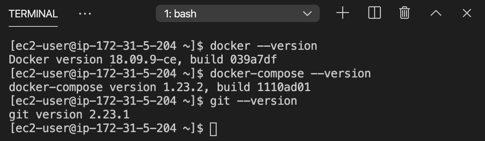
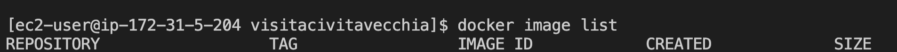

Introduzione ai database
Come abbiamo visto gli anni precedenti, in qualsiasi sistema di elaborazione trattiamo, sia esso hardware, software o una combinazione dei due, possiamo sempre individuare due componenti distinti con ruoli differenti:
- conservazione dei dati
- manipolazione dei dati
Nell'arco dei precedenti due anni, abbiamo trattato diversi casi. Di seguito una tabella che li riassume, insieme a quello che andremo a trattare in particolare quest'anno, il web.
| Hardware | Sistema Operativo | Applicazione | Web | |
|---|---|---|---|---|
| Dati | RAM/Hard Disk | files, database | strutture dati | database server |
| Manipolazione | CPU | processi, applicazioni | funzioni | application server, clients |
DBMS
Al cuore di ogni azienda, ci sono i dati che l'azienda tratta e che sono sempre una parte fondamentale del loro business. Questi dati possono riguardare i clienti dell'azienda, i propri prodotti, i fornitori o tutte queste cose insieme. Tutti questi dati formano il sistema informativo dell'azienda.
Da molti anni ormai questi dati sono trattati da un sistema informatico, che permette di poterli scrivere, leggere, analizzare, in generale manipolare in modo molto veloce. L'insieme dei dati di per sé viene chiamato database (abbreviato DB). Per trattare in modo efficiente, efficace e sicuro i DB sono nati dei software specifici dedicati alla gestione di questi dati, che vengono chiamati quindi Database Management System (DBMS).
Il DBMS fa da ponte tra i dati, che fisicamente vengono salvati in un supporto persistente (tipicamente dei file su un hard-disk) e l'utente.
![]()
Il DBMS che useremo in queste lezioni si chiama MariaDB, è completamente open source e mantenuto dalla MariaDB foundation. MariaDB è un fork di MySQL ed i comandi sono perfettamente compatibili con MySQL.
Da Wikipedia: MariaDB è nato nel 2009 come fork di MySQL. L'ideatore e responsabile del progetto è Michael "Monty" Widenius, il programmatore finlandese che ha iniziato e guidato per molti anni MySQL. Quando, all'inizio del 2008, la Sun Microsystems ha acquistato MySQL AB, Widenius si è trovato a disagio nella nuova situazione lavorativa, criticando[1] la gestione dello sviluppo della versione 5.1 di MySQL.
Altri DBMS molto diffusi sono: PostgreSQL, SQLite, MongoDB, Redis.
L'organizzazione dei file sull'hard-disk viene chiamato schema fisico del database. L'utente che usa il DBMS non vedrà mai direttamente come viene organizzato lo schema fisico, ma vedrà una sua rappresentazione astratta, chiamata schema logico.
Lo schema fisico cambia in base alle diverse aziende che forniscono il software per la connessione tra DBMS e DB; questo pezzo di software viene chiamato storage engine del database. Lo storage engine che useremo è InnoDB, anch'esso di Oracle ed open-source.
La lista degli storage engine è visualizzabile con il comando:
show storage engines;
che nel caso del nostro server restituisce il seguente output.
| Engine | Support | Comment | Transactions | XA | Savepoints |
|---|---|---|---|---|---|
| InnoDB | DEFAULT | Supports transactions, row-level locking, and foreign keys | YES | YES | YES |
| MRG_MYISAM | YES | Collection of identical MyISAM tables | NO | NO | NO |
| MEMORY | YES | Hash based, stored in memory, useful for temporary tables | NO | NO | NO |
| BLACKHOLE | YES | /dev/null storage engine (anything you write to it disappears) | NO | NO | NO |
| MyISAM | YES | MyISAM storage engine | NO | NO | NO |
| CSV | YES | CSV storage engine | NO | NO | NO |
| ARCHIVE | YES | Archive storage engine | NO | NO | NO |
| PERFORMANCE_SCHEMA | YES | Performance Schema | NO | NO | NO |
| FEDERATED | NO | Federated MySQL storage engine | NULL | NULL | NULL |
Nota: MEMORY è un particolare storage engine che salva i dati in memoria invece che su disco. Utile per fare prove o salvare tabelle che non devono essere persistenti, ad esempio per gestire sessioni temporanee. Da notare anche che esistono dei DBMS più specifici proprio per gestire DB in memoria, il più diffuso è Redis.
Mappa concettuale
Per riassumere gli aspetti più importante dei DBMS, allego questa mappa concettuale, di cui abbiamo discusso alcuni rami a lezione.

Cheat Sheet
Tipi dati
| Tipo | Limiti | Byte |
|---|---|---|
| char(n_caratteri) | 0 ≤ n_caratteri ≤ 255 | 1-255 |
| varchar(n_caratteri) | 0 ≤ n_caratteri ≤ 255 | 1-255 |
| tinyint | -128 ≤ valore ≤ 127 | 1 |
| int | -2·10⁹ ≤ valore ≤ 2·10⁹ | 4 |
| bigint | -2·10⁶³ ≤ valore ≤ 2·10⁶³ | 8 |
Nota sulle lettere maiuscole e minuscole
Il linguaggio SQL non fa distinzione tra maiuscole e minuscole. Questo ha portato a diversi stili di scrittura dei comandi, tutti sintatticamente validi.
Chi usa le lettere maiuscole ritiene che sia più chiaro e facile distinguere le keyword dal resto dei comandi.
Chi usa le lettere minuscole lo ritiene più in linea con la sintassi degli attuali linguaggi di programmazione, considerando che spesso si usano degli editor che si occupano di evidenziare le parole chiavi.
Personalmente preferisco usare le lettere minuscole, ma se usate le maiuscole va bene lo stesso. L'importante è che presa una scelta, siate coerenti con la scelta fatta (almeno all'interno della stessa query!!).
Convenzioni sui nomi
Seguiamo le seguenti convenzioni:
- per i nomi delle tabelle, usiamo il plurale (es.
utenti) - se possibile, per le tabelle usare un nome collettivo (es.
personaleinvece didipendenti) - per i nomi delle colonne, usiamo il singolare (es.
nome) - per le chiavi primarie, usiamo il nome della tabella al singolare seguito da
_id(es.utente_id)
Data Definition Language (DDL)
Il Data Definition Language (DDL) è la parte del linguaggio SQL che si occupa di creare, modificare o eliminare elementi nella schema logico del database. In altre parole, contiene i comandi per creare o modificare databases e tabelle. Le parole chiave usate nel DDL sono:
- create per creare elementi
- alter per modificare elementi
- drop per eliminare elementi
show databases;
Elenca tutti i database del DBMS
Esempi
show databases;
show tables;
Elenca tutte le tabelle nel database
Esempi
show tables;
show columns from nome_tabella;
Elenca le colonne di una tabella e le caratteristiche di ogni colonna
Esempi
show columns from utenti;
use nome_database;
Seleziona un database
Esempi
use calendario;
use bar;
CREATE
create table nome_tabella (nome_colonna tipo , nome_colonna2 tipo);
Crea una tabella all'interno del database
Esempi
create table eventi (titolo varchar(255), data int);
create table studenti (nome varchar(100), cognome varchar(100), eta int unsigned);
primary key
Indica una o più colonne che identificano in modo univoco una riga. In italiano: chiave primaria.
Esempi
create table cittadini (codice_fiscale char(16) primary key, nome varchar(255));
create table utenti (username varchar(50) primary key, password varchar(255));
create table telefoni (modello char(10) primary key, disponibilita int);
auto_increment
Incrementa il valore di una colonna ogni volta che viene aggiunta una riga
Esempi
create table prodotti (id int primary key auto_increment, nome varchar(255));
foreign key
Crea un riferimento ad una chiave primaria di un'altra tabella. In italiano: chiave esterna.
Spesso le tabelle hanno dei riferimenti le une con le altre. Pensiamo ad esempio alle tabelle "eventi" e "utenti". Ogni evento ha un organizzatore (uno solo), quindi vorremmo poter inserire questa informazione nel nostro database. Per fare questa operazione abbiamo bisogno di una chiave esterna.
Esempi
create table eventi (
titolo varchar(100),
evento_id int auto_increment,
organizzatore int,
foreign key (organizzatore) references utenti(utente_id)
);
Nel momento in cui si inserisce un nuovo evento, il DBMS controlla che l'organizzatore sia un utente esistente; in caso contrario rifiuta l'inserimento.
DROP
DROP TABLE nome_tabella;
Elimina una tabella dal database
Esempi
drop table prodotti;
drop table utenti;
drop table studenti;
ALTER
alter table nome_tabella rename to nuovo_nome_tabella;
Cambia il nome di una tabella
Esempi
alter table utenti rename studenti;
alter table ata rename personale_ata ;
RENAME
rename table nome_tabella to nuovo_nome_tabella, nome_tabella_2 to nuovo_nome etc...;
Cambia il nome di una o più tabelle (funziona solo in MySQL)
Esempi
rename table utenti to professori;
rename table ny_times to pubblicazioni_ny_times, the_guardian to pubblicazioni_the_guardian;
Data Manipulation Language
Il Data Manipulation Language (DML) è la parte del linguaggio SQL che serve per modificare, aggiornare e cancellare il contenuto delle tabelle, senza alternarne però lo schema logico. Si compone prevalentemente di:
- insert per inserire una nuova riga in una tabella
- update per aggiornare una o più colonne di una riga
- delete per cancellare una o più righe
INSERT
insert into nome_tabella (nome_colonna, nome_colonna2...) values (valore, valore2...);
Inserisce una riga nella tabella
Esempi
insert into studenti (nome, cognome) values ('mario', 'rossi');
insert into targhe (targa) values ('ab123cd');
insert into prodotti (nome, costo, disponibilita) values ('acqua', 0.50);
UPDATE
update nome_tabella set (nome_colonna = valore, nome_colonna2 = valore, ...) where condizione;
modifica una riga o più righe nella tabella
esempi
update studenti set nome='claudio' where cognome='rossi';
DELETE
delete from nome_tabella where condizione;
elimina una o più righe nella tabella
esempi
delete from studenti where cognome='rossi';
Data Query Language
Il Data Query Language (DQL) è la parte del linguaggio SQL che serve per interrogare il database. Si compone essenzialmente del comando select con tutte le sue diverse forme e clausole.
SELECT
select nome_colonna, nome_colonna2... from nome_tabella;
Seleziona (filtrando) dati da una tabella
Esempi
select nome, cognome from dipendenti;
select costo from merendine;
select * from video -- "*" significa "tutte le colonne";
L'asterisco (star in inglese) è da usare esclusivamente in fase di debug o nei rari casi in cui serva effettivamente avere tutte le colonne per eseguire qualche tipo di indagine. Nella pratica, in un'applicazione bisogna sempre selezionare le colonne che poi effettivamente saranno usate nel resto del codice, per aumentare le prestazioni ed evitare errori di vario genere.
WHERE
where condizione;
where introduce una o più condizioni per filtrare le righe
Esempi
select nome, cognome from cittadini where regione='lazio';
select nome, indirizzo from hotel where costo < 150.00 and stanze_libere > 2;
select nome, iban from libri where review between 3 and 5;
ORDER BY
order by colonna1,colonna2,... [asc|desc];
*order by ordina i risultati in base ad una colonna; si possono ordinare i risultati in ordine crescente (asc, default) o decrescente (desc). si possono specificare più colonne in sequenza, in questo caso ordinerà prima per la colonna1, poi per la colonna2, etc.
Esempi
select nome, cognome
from cittadini
order by cognome;
select nome, cognome
from cittadini
order by cognome,nome,età desc;
JOIN
Finora abbiamo trattato interrogazioni con una sola tabella. Molto spesso, tuttavia, serve fare interrogazioni su più tabelle contemporaneamente. Riprendiamo l'esempio della tabella eventi e la tabella utenti, e che ogni evento abbia esattamente un organizzatore.
Per fare interrogazioni su più tabelle, si usa la clausola join.
Vediamo come si crea un'interrogazione con la join. Si comincia sempre con il comando select. Dopo aver specificato come al solito le colonne che vogliamo selezionare, usiamo:
- la clausola from con la tabella che contiene la chiave esterna
- quindi aggiungiamo la clausola join con la tabella a cui fa riferimento la chiave esterna
- aggiungiamo infine la keyword on con la condizione sulle chiavi che si vogliono unire
Quando usiamo colonne da più tabelle, è bene specificare sempre anche la tabella quando richiamiamo una colonna, usando la notazione punto, ad esempio eventi.organizzatore.
Se non ci sono conflitti tra i nomi delle colonne, non sarebbe necessario specificare la tabella; tuttavia è una buona pratica diffusa e consolidata specificare sempre la tabella.
Tecnicamente, si può partire da una qualsiasi tabella, non solo quella con le chiavi esterne. Però per convenzione partiamo da quella, in modo da darci un'ordine mentale.
Se e solo se la colonna con la chiave esterna ha lo stesso nome della colonna con la chiave primaria, posso usare la clausola
usinganzichéon. Questo è particolarmente utile nelle tabelle associative, che vedremo in seguito.
Esempi
select eventi.titolo, utenti.nome, utenti.cognome
from eventi
join utenti on eventi.organizzatore=utenti.utente_id;
select eventi.titolo, utenti.nome, utenti.cognome
from partecipanti
join eventi using(evento_id)
join utenti using(utente_id);
La clausola join può essere usata insieme alle clausole where o order by per filtrare ed organizzare ulteriormente i risultati.
Esempi
select eventi.titolo, eventi.costo, utenti.nome, utenti.cognome
from eventi
join utenti on eventi.organizzatore=utenti.utente_id
where eventi.costo > 0
order by utenti.cognome asc;
AS
Come si può intuire dalle ultime query, le richieste complesse possono diventare anche molto lunghe. Per questo motivo è possibile abbreviare i nomi delle tabelle o delle colonne con il comando as.
Attenzione ad alcune cose in particolare:
- a volte l'alias viene utilizzato prima di essere definito, questo può sembrare contro-intuitivo ma è il comportamento normale
- per convenzione, l'alias delle tabelle è il primo carattere della tabella; se ci dovessero essere più tabelle che iniziano con lo stesso nome, si possono usare le prime due lettere oppure un numero incrementale (es.
s1,s2, etc.)
Esempi
-- comando as per rinominare le tabelle
select e.titolo, e.costo, u.nome, u.cognome
from eventi as e
join utenti as u on e.organizzatore=u.utente_id
where e.costo > 0
order by u.cognome asc;
-- comando as per rinominare le colonne
-- in questo caso la tabella risultante avrà nelle colonne i nuovi nomi degli alias
select e.titolo as titolo_evento,
u.nome as nome_organizzatore,
u.cognome as cognome_organizzatore
from eventi as e
join utenti as u on e.organizzatore=u.utente_id
where e.costo > 0
order by u.cognome asc;
Drop table if exists
In fase di sviluppo, può essere utile fare il drop delle tabelle e ricrearle da capo, invece di modificarle. Se si fa il drop di una tabella che non esiste, però, SQL ci ritorna un errore; questo è particolarmente fastidioso quando scriviamo uno script. Per evitare questo problema esiste il drop condizionato all'esistenza effettiva della tabella.
On delete
Cosa succede se cancelliamo una riga che è un riferimento in un'altra tabella? Consideriamo ad esempio che ho diversi eventi organizzati da Mario Rossi. Ad un certo punto, cancello l'utente Mario Rossi. Cosa succede a tutti gli eventi organizzati da lui?
Esistono varie strategie, essenzialmente:
- se la chiave esterna è facoltativa, si può sostituire con NULL
- cancello la riga con la chiave esterna
create table eventi (
-- ...
-- se viene cancellato l'organizzatore, nell'evento viene impostato a NULL
foreign key(organizzatore) references utenti(utente_id) ON DELETE SET NULL
create table eventi (
-- ...
-- se viene cancellato l'organizzatore, viene cancellato anche l'evento
foreign key(organizzatore) references utenti(utente_id) ON DELETE CASCADE
Relazioni tra tabelle
Due tabelle possono avere dei riferimenti tra loro di tipo diverso, che affronteremo in questo capitolo.
Uno a uno (one-to-one)
È il caso in cui una riga di una tabella si associa ad una ed una sola riga di un'altra tabella.
Questo tipo di relazione si ha di solito quando abbiamo una tabella di dettagli. Pensiamo ad esempio ad un'applicazione in cui salviamo nei database i dettagli di un utente.
create table utenti (
utente_id int primary key auto_increment,
nome varchar(100),
cognome varchar(100),
);
create table dettagli_utente (
utente_id int,
indirizzo varchar(100),
telefono varchar(30),
foreign key(utente_id) references utenti(utente_id)
);
In questo caso, ogni dettaglio si riferisce ad uno ed un solo utente, ed ogni utente ha uno es un solo dettaglio.
Per interrogare il database:
select u.cognome,d.indirizzo
from dettagli_utente as d
join utenti as u
using(utente_id);
Da notare che in questa select ho usato using anziché on perché le colonne con la chiave esterna e la chiave primaria avevano lo stesso nome (utente_id).
Qualcuno potrebbe pensare che la tabella dettagli_utente potrebbe essere fusa con la tabella utenti, cioè potremmo semplicemente aggiungere le colonne indirizzo e telefono ad utenti. Ottima osservazione! In effetti, alcune volte conviene farlo, altre volte no. Bisogna prendere in considerazione:
- quanto spesso utilizzo i dettagli: se li uso raramente, conviene tenerli in una tabella separata
- quanto sono grandi le tabelle: se la tabelle sono grandi, conviene tenerle separate
- se hanno privilegi di accesso diversi: se la tabella dettagli ha dei vincoli di accesso più stringenti (ad esempio perché contiene dei dati sensibili), conviene tenerli in una tabella separata.
Uno a molti (one-to-many)
E' il caso in cui una riga di una tabella può avere un riferimento da più righe di un'altra tabella.
Pensiamo al caso degli eventi e dell'organizzatore dell'evento. Ogni evento, ha uno ed un solo utente organizzatore, mentre un utente può organizzare vari eventi.
create table utenti (
utente_id int primary key auto_increment,
nome varchar(100),
cognome varchar(100),
)
create table eventi (
evento_id int primary key auto_increment,
titolo varchar(100),
organizzatore int,
foreign key(organizzatore) references utenti(utente_id)
)
Interrogazione:
select e.titolo,u.cognome
from eventi as e
join utenti as u
on e.organizzatore=u.utente_id;
Molti a molti (many-to-many)
È il caso in cui una riga di una tabella può riferirsi a più righe di un'altra tabella e viceversa.
Pensiamo ad esempio al caso dei partecipanti ad un evento. Ogni evento può avere più eventi partecipanti, ed ogni utente può partecipare a più eventi.
Non esiste in SQL un modo semplice di esprimere questa relazione. Per sua natura infatti, ogni colonna può avere solo un valore, non è possibile mettere una lista di valori all'interno della colonna.
In teoria si potrebbe avere una colonna
varcharcon all'interno più valori, ad esempio più numeri di telefono separati da virgola. Questa sarebbe una convenzione personale dello sviluppatore, non qualcosa di gestito nativamente dal database, ed è fortemente sconsigliato. In ogni caso, quando un database non ha effettivamente colonne con più valori, si dice che è in prima forma normale.
Per rappresentare una relazione molti a molti dobbiamo necessariamente usare una nuova tabella, che conterrà solo chiavi esterne che fanno riferimento alle tabelle che devono essere associate. Questa tabella prende il nome di tabella associativa (junction table).
create table utenti (
utente_id int primary key auto_increment,
nome varchar(100),
cognome varchar(100),
);
create table eventi (
evento_id int primary key auto_increment,
titolo varchar(100),
);
create table partecipanti (
evento_id int,
utente_id int,
foreign key(evento_id) references eventi(evento_id),
foreign key(utente_id) references utenti(utente_id),
);
A questo punto, per poter fare un'interrogazione, dovrò mettere due join concatenate:
select e.titolo,
u.nome as nome_partecipante,
u.cognome as cognome_partecipanti
from partecipanti as p
join eventi as e
using(evento_id)
join utenti as u
using (utente_id);
Raccolta dei requisiti
La creazione e manutenzione di un database è qualcosa di molto complesso (soprattutto per i DB relazionali come SQL), quindi conviene bisogna fare un'attenta progettazione iniziale per ridurre al minimo le modifiche in fase esecutiva.
Colloquio con il committente (customer)
Per cominciare a progettare il database, bisogna raccogliere prima di tutto i requisiti dagli stakeholder. Gli stakeholder sono "chiunque c'entri" con il progetto, quindi il committente, gli utenti finali, eventuali sistemisti, norme e regolamenti, etc.
Nel nostro caso, per semplicità, consideriamo solo il colloquio con il committente, che dal nostro punto di vista possiamo anche chiamare cliente.
Nell'agile/scrum, il colloquio è un compito che svolge il Product Owner.
Durante il colloquio, dovrete cercare di raccogliere informazioni a riguardo:
- cosa ci si aspetti che faccia il servizio, in poche parole
- chi saranno gli utilizzatori del servizio (amministratori, impiegati, utenti finali, etc.)
- quanti sono gli utenti attesi che usufruiranno del servizio, per ogni tipologia (10 utenti finali al giorno? 100? 1000? quanti impiegati?)
- quali operazioni deve svolgere ogni tipologia utente
- quante volte ogni tipologia di utente svolge una certa operazione (es. accesso al sito, prenotazione, like su un elemento, etc.)
Diamo inoltre i seguenti suggerimenti:
- lasciate parlare liberamente il vostro interlocutore, non interrompetelo troppo di frequente
- se l'interlocutore sta evidentemente divagando, riportatelo sul progetto cone delle domande su argomenti specifici di interesse
- non fate domande troppo tecniche, siete voi che dovete saper gestire i dettagli implementativi, non lui
- non esitate a chiedere il perché di una certa affermazione, anche se a volte la risposta può sembrare scontata, a volte non lo è
Alcuni consigli su come scrivere gli appunti:
- usate sempre un verbo e non solo sostantivi negli appunti
lista prenotazioni --> controllare lista prenotazioni
- cercate sempre di mettere il soggetto al verbo, soprattutto se non è ovvio
controllare lista prenotazioni --> l'amministratore deve poter controllare la lista prenotazioni
- quando possibile cercate di mettere il perché di un certo appunto
l'amministratore deve poter controllare la lista prenotazioni --> l'amministratore deve poter controllare la lista prenotazioni per fare rendicontazione giornaliera
In generale, cercate di prendere appunti in forma discorsiva, non come semplice elenco puntato.
Soprattutto se il colloquio è in presenza, si consiglia inoltre di prendere appunti su un foglio di carta, per mettere a maggior agio l'interlocutore, fare disegni e diagrammi, sottolineare o aggiungere note facilmente ad appunti già presi.
Analisi degli appunti
Una volta raccolti gli appunti, si passa all'analisi.
Anche in questo caso, vediamo un metodo semplice per analizzare i dati
- cerchiare le parole (o metterle in grassetto se il file è digitale)
- sottolineare i verbi
- se necessario, farsi un dizionarietto con gli eventuali sinonimi. Ad esempio, il committente potrebbe aver parlato di "cliente", "ragazzo", "compratore" riferendosi alla stessa tipologia di utente.
Schema concettuale (modello E-R)
A questo punto possiamo passare dagli appunti ad una raffigurazione grafica un po' più strutturata, per ragionare meglio sul progetto da realizzare.
Lo schema che andremo a creare si chiama schema concettuale. In questa fare siamo ancora in una descrizione ad alto livello, non dobbiamo soffermarci o preoccuparci degli aspetti tecnici.
Lo schema concettuale rappresenta la struttura del progetto, non si occupa delle singole istanze (ovvero del singolo dipendente, prenotazione, etc.)
Esistono molte convenzioni per i diagrammi E-R. Noi ne seguiremo le stesse convenzioni del corso di Base di Dati della Sapienza (prof.ssa Tiziana Catarci, prof. Francesco Leotta). Le slide sono disponibili online.
Entità
Le entità rappresentano concetti all'interno del nostro dominio. Tipicamente, i nomi che abbiamo individuato nella fase di analisi dei requisiti diventano entità.
Le entità:
- si rappresentano attraverso dei rettangoli
- hanno il nome al singolare
- generalmente iniziano con le lettere maiuscole

Relazioni
Le relazioni tra entità si rappresentano tramite rombi con all'interno un verbo.

All'interno del rombo ci deve essere anche una freccia che indica la direzione in cui si legge il verbo. Si devono mettere inoltre le molteplicità nel punto in cui la linea della relazione tocca l'entità.

La molteplicità indica quante volte una certa istanza può essere coinvolta nella relazione, e si indica con una coppia di numeri tra parentesi separati da virgola, ad esempio (0,1) oppure (1,n). Se i due numeri coincidono, si può scrivere una volta sola, ad esempio (1) equivale a (1,1). I due numeri in questione si chiamano cardinalità, ed in particolare il primo numero è la cardinalità minima ed il secondo numero la cardinalità massima.
Alcune osservazioni
- se la cardinalità minima è 0, vuol dire che la relazione è opzionale
- se la cardinalità minima è 1 (o più), vuol dire che la relazione è obbligatoria
- se la cardinalità massima è un numero esatto, vuol dire che la relazione può avere al massimo quel numero di istanze
- se cardinalità massima è
n, vuol dire che la relazione può avere un numero indeterminato di istanze
Ad esempio: 
Le molteplicità si leggono partendo dalla relazione opposta e passando per la relazione. Di seguito alcuni esempi.
Relazione "partecipa a", molteplicità lato evento (0,n):
- possono esistere utenti che non partecipano a nessun evento
- un utente può partecipare a più eventi
Relazione "partecipa a", molteplicità lato utente (0,n):
- possono esistere eventi senza partecipanti
- un evento può avere più partecipanti
Relazione "organizza", molteplicità lato utente (1):
- un evento deve avere un organizzatore
- un evento è organizzato da esattamente un utente
Relazione "organizza", molteplicità lato evento (0,n):
- possono esistere utenti che non organizzano nessun evento
- un utente può organizzare più eventi
Le relazioni possono collegare anche più di due entità; in questo caso però la situazione diventa un po' più complicata da leggere e gestire. In generale, se possibile meglio evitare.
Alcune relazioni hanno molteplicità più complesse; in questo caso si aggiungono delle note sotto il diagramma per specificarle in modo discorsivo.
Attributi
Sia le entità che le relazioni possono avere attributi. Gli attributi li rappresentiamo con un bastoncino che termina con una pallina:
- se la pallina è nera, l'attributo è una chiave primaria
- se la pallina è bianca, è un normale attributo

Altre convenzioni da tenere a mente:
- se non c'è una chiave primaria naturale (es. codice fiscale), usiamo una chiave surrogata che possiamo chiamare semplicemente
id - non è necessario mettere come attributi le chiavi esterne, perché quelle sono già incluse all'interno delle relazioni.
Attributi calcolati
Alcuni valore possono essere calcolati automaticamente da altri attributi. Ad esempio, per l'entità utente potremmo avere bisogno sia della data di nascita che dell'età. In generale, conviene mettere solo un attributo, e specificare nelle note sotto al diagramma che il valore di età verrà calcolato.
In alcuni casi però può convenire mantenere un attributo calcolato, se questo ha dei vantaggi computazionali. Ad esempio immaginiamo un blog in cui devo visualizzare la lista di tutti i post e per ognuno il numero di like. Ogni post potrebbe venire visualizzato migliaia di volte al giorno, e potrebbe avere migliaia di like. In teoria, il numero di like è un valore calcolato come numero di istanze della relazione post ed utente, ma probabilmente conviene salvarlo come attributo ridondato, per evitare di calcolarlo ogni volta. Il problema è ovviamente che ad ogni nuovo like devo ricordarmi di aggiornare il valore dell'attributo.
Scelta tra entità, relazione e attributo
A volta può sorgere il dubbio se "qualcosa" sia meglio rappresentarlo come entità e relazione. Immaginiamo ad esempio un utente che prenota un'acconciatura dal parrucchiere. Il concetto di "prenotazione" è un entità a sé stante o una relazione tra utente ed acconciatura?
Altre volte può sorgere il dubbio se qualcosa è un'entità indipendente o solo un attributo. Ad esempio, la città dove vive l'utente, posso rappresentarla solo come un attributo o deve essere un'entità separata?
Non c'è una risposta corretta ed una sbagliata, ma possiamo tenere in mente le seguenti cose:
- se qualcosa ha un significato indipendente dal resto del modello, allora probabilmente è un'entità
- se qualcosa ha senso solo in relazione ad altre entità, allora probabilmente è una relazione
- come regola a spanne, se una relazione comincia ad avere molti attributi, probabilmente dovrebbe essere un'entità
- se un attributo è dipendente dagli altri attributi, allora potrebbe essere utile fare un'entità separata (es. città e regione sono dipendenti tra loro)
Schema logico
Una volta che siamo soddisfatti con lo schema concettuale, possiamo passare a convertirlo nello schema logico che poi potrà essere implementato nel DBMS.
Per fare questo passaggio, ci sono alcune regole che dobbiamo seguire.
Entità ed attributi
Per le entità valgono le seguenti regole:
- ogni entità diventa una tabella
- le tabelle si rappresentano con la sintassi
nometabella(lista attributi) - il nome dell'entità diventa il nome della tabella, convertito al plurale e con la lettera minuscola (es. Utente diventa utenti)
- ogni attributo dell'entità diventa un'attributo della tabella
- se la chiave primaria è
id, si aggiunge il nome della tabella al singolare, ad esempioid_utente - le chiavi primarie sono sottolineate
Riprendendo l'esempio del capitolo precedente:
- utenti(id_utente,nome,cognome)
- eventi(id_evento,titolo, costo)
Queste tabelle ancora non sono complete perché mancano le chiavi esterne, che vedremo nel prossimo paragrafo.
Relazioni
Per le relazioni valgono le seguenti regole:
- per le relazioni uno a molti si aggiunge una chiave esterna nel lato "uno" della relazione
- per le relazioni molti a molti, si crea una nuova tabella associativa, che contiene come attributi le chiavi esterne verso le due relazioni; bisogna anche aggiungere un vincolo di unicità della coppia di chiavi esterne
- per le relazioni uno a uno si può procedere in diversi modi:
- le due tabelle possono diventare un'unica tabella che contiene tutti gli attributi
- se non si vuole creare un'unica tabella, si procede come nel caso delle relazioni uno a molti, scegliendo come entità che ha la chiave esterna quella più dipendente dall'altra (es. dettagli_utente dipende concettualmente da utente e quindi andrà a contenere la chiave esterna)
- per le chiavi esterne si usa il corsivo
Completando l'esempio di prima, la relazione è n-n, quindi aggiungo una tabella associativa in cui la coppia:
- utenti(id_utente, nome, cognome)
- eventi(id_evento, titolo, costo, organizzatore)
- partecipanti(id_utente, id_evento)
MVC
Nel nostro progetto useremo il framework MVC (Model-View-Controller) con PHP per creare il nostro sito web.
Per maggiori informazioni su questa sezione visitare la documentazione su GitHub del prof. Melita.
REST API
La parola "API" (Application Program Interface) è riferita al generico concetto di definizione un'interfaccia tra due applicazioni software. Nell'ambito web, le API sono particolarmente importanti perché definiscono il modo con cui client e server comunicano tra di loro. Delle API definite bene, permettono di dividere in modo proficuo il lavoro tra gli sviluppatori front-end e back-end, facilitano l'integrazioni di servizi di terze parti, la scalabilità e la manutenibilità del codice, etc.
Esistono diversi approcci per definire delle API. L'approccio web attualmente più usato si chiama "REST" ed è quello che analizzeremo in questo corso.
Un alternativa alle REST API sono le SOAP API, in cui uso sempre uno stesso URL e la specifica risorsa viene selezionata all'interno del body della richiesta HTTP attraverso un documento XML. Questo tipo di approccio però non si coniuga bene con il funzionamento dei browser e del web in generale, rendendo impossibile ad esempio creare bookmarks, condividere link o navigare indietro nella cronologia delle pagine visitate. In generale quindi, se non ci sono esigenze particolari, è sempre consigliato usare il paradigma REST.
Caratteristiche distintive delle REST API
REST è l'acronimo di Representational State Transfer. Proposto per la prima volta nel 2000 da Roy Fielding (USA), prevede i seguenti concetti fondamentali:
- Risorse con URL auto-descrittivi
Gli URL devono essere il più possibile chiari per l'utente e contenere le informazioni necessarie al server per processare la richiesta. Ad esempio, dall'URL https://en.wikipedia.org/wiki/Representational_state_transfer#Uniform_interface è chiaro cosa sto chiedendo al server, anche senza dover cliccare sul link stesso.
- Utilizzo esplicito dei metodi HTTP
Ogni risorsa (URL) può essere associato ad azioni diverse usando metodi HTTP diversi. Ad esempio, usando il metodo GET posso leggere una risorsa, con PUT posso modificarla, con DELETE posso cancellarla, etc.
- Comunicazione senza stato
La comunicazione senza stato (stateless) è qualcosa che pervade il web e forse è uno dei suoi tratti più caratteristici e di successo. In pratica, significa che ogni richiesta è indipendente dalle altre e il server non tiene traccia direttamente della successione delle chiamate. Un'associazione tra queste può essere fatto indirettamente tramite cookies o chiavi di sessione, ma il server non tiene aperto un thread, processo o canale tra una chiamata HTTP e la successiva.
REST & MVC
Lato server, ogni richiesta HTTP è associata ad un azione (cioè un metodo o una funzione). Le azioni sono richiamabili direttamente nella barra degli indirizzi del browser o indirettamente da una ancora in un link. I parametri che vengono passati alla funzione sono anch’essi nella forma analoga a quella degli altri path, cioè un elenco di parametri separati da / oppure alla fine del path dopo il ?. Ad es. calcolatrice/somma/3/4/ (oppure calcolatrice/somma?a=3&b=4) esegue la somma di due numeri forniti come parametro. L'abbinamento tra HTTP e azione avviene nel "routing" dell'applicazione, nel nostro caso in index.php.
Operazioni REST
Lato server, le operazioni REST sono solitamente associate ad operazioni che avvengono all'interno di un database.
Ricordiamo che, quando interagiamo con un qualsiasi database, i diversi comandi rientrano all'interno delle operazioni cosiddette CRUD: Create, Read, Update e Delete.
I database SQL e le chiamate HTTP usano strategie diverse per eseguire queste operazioni. Di seguito una tabella riassuntiva di confronto.
| Operazione | SQL | HTTP/REST |
|---|---|---|
| Create | INSERT | POST (o PUT) |
| Read | SELECT | GET |
| Update | UPDATE | PUT / PATCH |
| Delete | DELETE | DELETE |
Di seguito vediamo in dettaglio alcune operazioni HTTP/REST.
Ricordiamo anche che, per effettuare una qualsiasi operazione, bisogna preliminarmente identificare l'URL della risorsa, ad esempio /users/27 oppure /events. Per identificare la risorsa, è necessario consultare la documentazione delle API.
Selezione della risorsa
Per leggere il valore di una risorsa, usiamo l'URL della risorsa stessa ed effettuiamo la richiesta HTTP con il metodo GET. Ci si aspetta che il database non cambi stato dopo questa chiamata.
Eccezioni a questa regola potrebbero essere quando vogliamo salvare alcune informazioni di analisi d'utilizzo del sito, In questo caso, una chiamata GET aumenterà comunque un contatore di visite, modificando di fatto lo stato del server.
Modifica di una risorsa
Per modificare la risorsa POST e PUT in base al tipo di operazione che vogliamo eseguire. POST di solito si usa quando voglio creare una nuova risorsa, mentre PUT quando la voglio modificare. In realtà, la distinzione tra questi due metodi è più sottile, come mostrato di seguito.
Idempotenza
Per capire bene la differenza tra POST e PUT, dobbiamo introdurre il concetto di idempotenza. Un comando si chiama idempotente se "richieste ripetute identiche devono portare al medesimo stato dei dati sul server". Pensate ad esempio ad una UPDATE in SQL. Se chiamate più volte UPDATE con gli stessi parametri, le chiamate successive alla prima non avranno effetto sulla riga da aggiornare. Pensate ora alla INSERT. Se chiamate più volte INSERT con gli stessi parametri, ipotizzando un'assegnazione automatica della chiave primaria, ad ogni chiamata il database andrà ad aggiungere una nuova riga.
La stessa cosa per le chiamate HTTP.
PUT è idempotente: facendo più richieste identiche, il DB viene modificato solo la prima volta.
POST non è idempotente: facendo più richieste identiche, ad ogni chiamata verrà aggiunta una nuova risorsa e creata una chiave primaria per noi.
Nella pratica, questo significa che quando uso PUT devo passare anche la chiave primaria dell'elemento da creare o aggiornare, mentre con POST non devo fornire la chiave primaria, perché verrà creata dal server.
Approfondimento sul concetto di idempotenza qui.
Tools
Per definire e testare le REST API, ci sono diversi strumenti molto utili, di seguito ne descriviamo un paio.
Postman
Postman è una piattaforma pensata principalmente per il test di un server già esistente. Fornisce moltissimi strumenti per automatizzare i test, dando la possibilità di creare anche scenari complessi con diversi variabili ambientali.
Fornisce anche la possibilità di creare automaticamente la documentazione, oppure di fare il design di nuove API.
Si interfaccia in modo molto fluido con Swagger: è possibile importare facilmente o addirittura sincronizzare nel tempo un progetto Swagger dentro Postman.
Swagger
Swagger è pensato principalmente per fare il design delle REST API. Attraverso un file in formato .yaml, è possibile descrivere accuratamente come dovrà funzionare il nostro server, ancora prima di averlo creato.

Swagger da la possibilità di creare un server di mockup che genera le risposte alle chiamate HTTP esattamente come sono state definite.
Anche Swagger ha una funzionalità che si chiama Inspector che permette di fare il test delle API su un server esistente. In questo caso, è richiesto che all'interno del server da testare sia presente un file swagger.json con la definizione delle chiamate fornite dal server stesso.
Cloud
In questo capitolo ci occuperemo di capire come funziona il cloud. Useremo AWS come piattaforma. Useremo anche docker per installare facilmente appliacazioni nella nostra macchina virtuale.
Cloud tutorial
Per il tutorial useremo AWS Academy che non richiede una carta di credito per fare l'account. Dovrete usare il vostro indirizzo email della scuola
Login
Andare su AWS Academy e fare il login.
Tra i corsi disponibili, andare su "AWS Academy Learner Lab", quindi su Moduli -> Learner Lab Foundational Services -> Start Lab.
Aspettare qualche secondo che il pallino vicino ad AWS da rosso diventi verde, quindi cliccarci sopra.
Importante: ricordarsi sempre di chiudere la sessione del laboratorio quando si ha finito con gli esercizi, per non sprecare credito. Si consiglia anche di interromprere tutti i servizi (EC2, database, etc), perché non tutti vengono chiusi automaticamente.
Ricordatevi di rimanere sempre in Virginia Settentrionale, altrimenti il vostro credito non funzionerà.
Creare un'istanza
Ora vi ritrovate in una console reale di AWS!
Dalla lista dei servizi in alto, selezionate EC2. Nella pagina che si apre, selezionate il bottone arancione per lanciare una nuova istanza. Lasciate tutto di default: Linux Amazon 2 AMI su x86 a 64bit, e t2.micro.
Alla fine del processo, quando richiesto, usare la chiave vockey.pem. La chiave può essere scaricata in qualsiasi momento dal sito di AWS Academy andando su "AWS Details", vicino al bottone "Start Lab" che abbiamo premuto prima. Si consiglia di rinominare subito la chiave appena scaricata in vockey.pem, per semplificare le operazioni successive.
Non chiudere la finestra della dashboard, ci servirà in seguito.
CHECKPOINT Controllare sulla dashboard che l'istanza sia "running".

Accedere all'istanza da terminale
Dal vostro computer, aprite il vostro terminale preferito, navigate nella cartella in cui si trova la chiave scaricata.
Dalla console di AWS, selezionate l'istanza a cui volete connettervi, quindi andate in alto cliccate su "Connect". Selezionate la tab "SSH client". Solo la prima volta che avete scaricato la chiave, selezionate il comando al punto 3 chmod... per cambiare i permessi della chiave. Quindi selezionate il comando nell'esempio ssh -i... ed incollatelo nel vostro terminale.
Se tutto è andato a buon fine, dovreste esservi collegati all'istanza.
La prima volta vi chiederà conferma del fingerprint, scrivete yes e premete invio.
Configurare l'istanza al primo avvio
Ora che siamo riusciti a connetterci l'istanza, dobbiamo configurarla per i nostri scopi.
Quello che andiamo a fare, è installare sulla macchina remota gli eseguibili che ci serviranno per completare il progetto:
- docker
- docker-compose
- git
Per configurare l'istanza, la prima volta copiate i seguenti comandi.
Suggerimento: nel riquadro qui sotto, in alto a destra trovate l'icona delle pagine per copiare tutti i comandi in una volta sola.
sudo yum update -y
# install docker
sudo yum install docker -y
# add docker to the admin group, so we can use it without sudo
sudo groupadd docker
sudo usermod -aG docker $USER
# add docker to startup services
sudo chkconfig docker on
sudo systemctl enable docker
# install docker-compose
sudo curl -L "https://github.com/docker/compose/releases/download/1.23.2/docker-compose-$(uname -s)-$(uname -m)" -o /usr/local/bin/docker-compose
sudo chmod +x /usr/local/bin/docker-compose
# install git
sudo yum install git -y
Disconnettersi dalla macchina scrivendo exit o premendo ctrl-d e riconnettetevi. Controllate che sia andato tutto a buon fine con i seguenti comandi:
docker --version
docker-compose --version
git --version

Docker: le basi
Docker è una piattaforma che permette di creare, testare e distribuire applicazioni velocemente. Raccoglie il software in unità standardizzate chiamate "container" che contengono tutto il necessario per la loro corretta esecuzione, incluse librerie, strumenti di sistema, codice e runtime.

I container sono delle immagini in esecuzione. Per avviare un container quindi dobbiamo prima avere la relativa immagine. Controlliamo le immagini nella nostra macchina con il seguente comando:
Checkpoint Eseguite il seguente comando:
docker image list
e controllate di avere un output del genere:

Se una volta ricollegati alla macchina remota, il comando docker image list non dovesse funzionare, lanciate il comando
sudo systemctl start dockere riprovate.
Per scaricare immagini e lanciare container, useremo lo script docker-compose.
Creare il file stack.yml per docker compose
Creiamo una cartella barbiere dove metteremo i nostri file di progetto.
mkdir barbiere
cd barbiere
Creiamo il file stack.yml.
nano stack.yml
A questo punto, inseriamo il codice che ci serve per scaricare ed avviare un database, ad esempio mariadb.
version: '3.1'
services:
db:
image: mariadb
restart: always
environment:
MARIADB_ROOT_PASSWORD: example
Con queste righe, sto dicendo di creare un nuovo servizio, che chiamo db, l'immagine di partenza è mariadb, al riavvio di docker si deve sempre rilanciare e ha come variabile d'ambiente quella specificata.
L'immagine mariadb viene scaricata dall'hub ufficiale di docker, hub.docker.com.
Per avviare la stack, usiamo il seguente comando.
docker-compose -f stack.yml up
Se tutto va bene, dovreste alla fine vedere qualcosa del genere.
Creating barbiere_db_1 ... done
Attaching to barbiere_db_1
db_1 | 2022-03-22 07:22:51+00:00 [Note] [Entrypoint]: Entrypoint script for MariaDB Server 1:10.7.3+maria~focal started.
...
db_1 | 2022-03-22 7:22:58 0 [Note] InnoDB: Buffer pool(s) load completed at 220322 7:22:58
Il nostro server è up! Ma come facciamo ad interrogarlo? Installiamo un pannello di amministrazione. Useremo Adminer, che è la nuova versione di phpMyAdmin.
Aggiungiamo a stack.yml un nuovo servizio:
adminer:
image: adminer
restart: always
ports:
- 8080:8080
L'ultima proprietà, ports, dice che la porta 8080 nella macchina AWS (host, a sinistra dei due punti) deve corrispondere alla porta 8080 del container (a sinistra dei due punti).
Per rendere la configurazione operativa, interrompere docker-compose con CTRL-C e rilanciare il comando.
Prima di provare ad accedere, però, devo ricordarmi di aprire la porta 8080 su AWS. Per fare questo, selezionare la macchina sulla console, selezionare in basso la tab Security, cliccare sul link nella sezione "Security Groups", quindi in "Inbound Rules" selezionare "Edit inbound rules" -> "Add rule", come type lasciare Custom, come Port range inserire 8080 e come Source selezionare "Anywhere IPv4". Salvare.
Ora possiamo aprire un browser alla porta 8080 e controllare. Per l'indirizzo, dobbiamo tornare sulla console AWS, selezionare la macchina ed in basso trovare la voce "Public DNS". Copiare il dns e ricordarsi di aggiungere alla fine :8080.
Nota: il nostro sito non ha certificati, quindi assicurarsi sempre di usare http e non https.

Inserire come nome utente root e come password quella inserita nel file stack.yml.
Configurare il web server e PHP
Ora passiamo ad installare un web server con il supporto PHP.
Per il web server useremo Nginx, che rispetto al rivale Apache è più piccolo e leggero e quindi adatto al nostro contesto.
Per il PHP, non installeremo direttamente l'interprete sulla macchina del web server, ma creeremo un container dedicato. Metteremo i due container in comunicazione attraverso una tecnica che si chiama "FastCGI", che permette a più applicazioni di comunicare tra di loro attraverso la rete.
Aggiungiamo quindi i servizi necessari:
webserver:
image: nginx
volumes:
- ./code:/code
- ./nginx.conf:/etc/nginx/conf.d/default.conf
ports:
- 80:80
php:
image: php:fpm
volumes:
- ./code:/code
In questo snippet vediamo un'altra proprietà fondamentale di docker: la proprietà volumes. Ci serve per mappare una cartella sulla macchina host (sempre a sinistra dei due punti) in una cartella nel container.
In particolare, qui stiamo dicendo che la cartella che conterrà il codice è ./code nella macchina host e /code nel container. Per configurare i container in modo da cercare il codice da servire in /code (che non è la cartella di default) e per far funzionare l'interprete PHP, dobbiamo modificare il file di configurazione del web server attraverso il file nginx.conf.
Creiamo quindi questo file e riempiamolo in questo modo:
server {
listen 80;
index index.php index.html;
server_name localhost;
error_log /var/log/nginx/error.log;
access_log /var/log/nginx/access.log;
root /code;
location ~ \.php$ {
try_files $uri =404;
fastcgi_split_path_info ^(.+\.php)(/.+)$;
fastcgi_pass php:9000;
fastcgi_index index.php;
include fastcgi_params;
fastcgi_param SCRIPT_FILENAME $document_root$fastcgi_script_name;
fastcgi_param PATH_INFO $fastcgi_path_info;
}
}
Osserviamo in particolare 2 righe:
root /code;ci dice dove si trova il codice da servirefastcgi_pass php:9000;ci dice dove si trova l'interprete php; notare che "php" è il nome dns automaticamente assegnato da docker al servizio php, in quanto è il proprio il nome del servizio!
Tutti i container in una stack docker sono messi in rete tra di loro, per raggiungersi tra di loro si usa il dns interno che crea dei nomi identici al nome del servizio.
Prima di provare ad accedere al web server, ricordiamoci di aprire anche la porta 80 sulla nostra macchina AWS, come visto in precedenza.
Creazione di un file di prova
A questo punto ci manca solo di fare un file di prova.
Creiamo dentro ./code un index.php di esempio:
<?php echo "Ciao sono un file PHP!";
$servername = "db";
$username = "root";
$password = "example";
// Create connection
$conn = new mysqli($servername, $username, $password);
// Check connection
if ($conn->connect_error) {
die("Connection failed: " . $conn->connect_error);
}
echo "Connected successfully";
?>
Anche in questo caso, come servername abbiamo usato il nome del servizio del db. Configurare la password secondo le proprie esigenze, in accordo con il file stack.yml.
A questo punto, se aprendo il browser trovate "Connected successfully", tutto è andato a buon fine!
Ricordatevi sempre di riavviare docker-compose dopo aver modificato il file stack.yml!
Riepilogo
Rivediamo cosa abbiamo fatto.
- abbiamo creato una macchina virtuale sul cloud con Amazon Web Services
- ci siamo connessi all'istanza con un terminale SSH
- abbiamo configurato l'istanza con i comandi che ci servivano, in particolare
docker,docker-composeegit - abbiamo creato un progetto template
- docker si è scaricato le dipendenze del nostro progetto template (
nginx,PHP,MySQL,PHP MyAdmin) - abbiamo aperto le porte necessarie nella nostra macchina remota
- la webapp è pronta all'uso